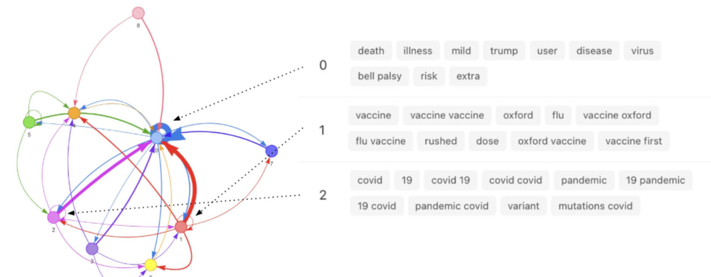

I am a media scientist and artist living between Los Angeles and Phoenix.
As a postdoc at UCLA, I conduct psychology experiments and develop digital technologies to study how online networks shape the stories we believe and groups we form.
I founded mediaslop to inspire new forms of storytelling within media environments flooded with slop content.
In my home state of Arizona, I develop public installations that encourage local communities to collaborate and share their personal stories.
Alongside these proejcts, I also lead the Faithscape community research project on spirituality in the suburbs.
Our goal is to objectively parse the positive and negative impacts of religion, and to understand why people are drawn to their spiritual communities.
We apply insights to improve the sense of community, rituals, and stories of secular spaces. Findings are shared on New Sage.
Below are selected research projects and publications highlighting my research. Click on a Project Card to access open data, analysis scripts, and high-level interpretations of findings. For example, this Python notebook on measuring narrative alignment in experimentally controlled online social networks.
Visit my Research Portfolio to see more projects.
My complete list of academic publications is available on my Google Scholar.
Modeling Human Beliefs with AI
AI software that extracts and visualizes user beliefs from natural language and social media, applied to tweets and personal narratives.
NLP
Belief Modeling
Data Viz
Narrative Interaction in Online Networks

Social network experiments reveal how network structure and interaction media shape the emergence of shared narratives and language change.
Experiments
AI Agents
NLP
Social Media Belief Dynamics

Data science studies on political belief and narrative dynamics on social media using data mining, NLP, and network science.
Social Media
Narratives
NLP